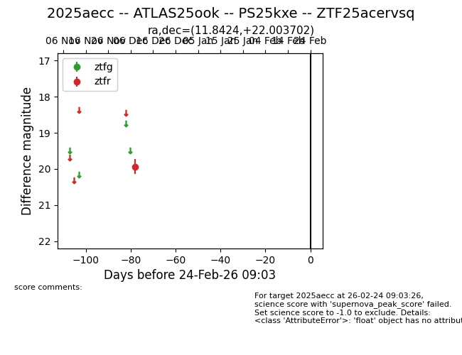
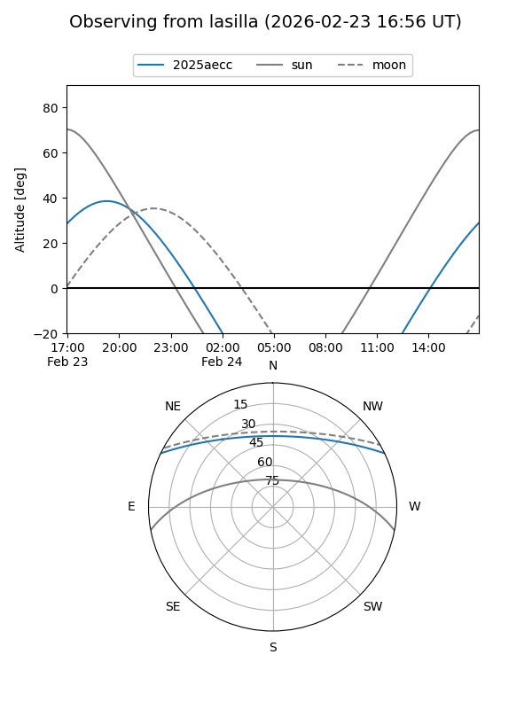

2025aecc
Target 2025aecc at 2025-12-18 11:17
Aliases and brokers:
FINK: fink-portal.org/ZTF25acervsq
Lasair: lasair-ztf.lsst.ac.uk/objects/ZTF25acervsq
ALeRCE: alerce.online/object/ZTF25acervsq
TNS: wis-tns.org/object/2025aecc
YSE: ziggy.ucolick.org/yse/transient_detail/2025aecc
alt names
ZTF25acervsq (ztf,fink_ztf)
2025aecc (tns,yse)
ATLAS25ook (atlas)
Coordinates:
equatorial (ra, dec) = 11.8424,+22.00370
equatorial (HMS+DMS) = 00:47:22.17,+22:00:13.33
galactic (l, b) = (121.6850,-40.85820)
Photometry
last ztfr=19.93
1 ztfr detections
Lightcurve

Visibility


Additional plots